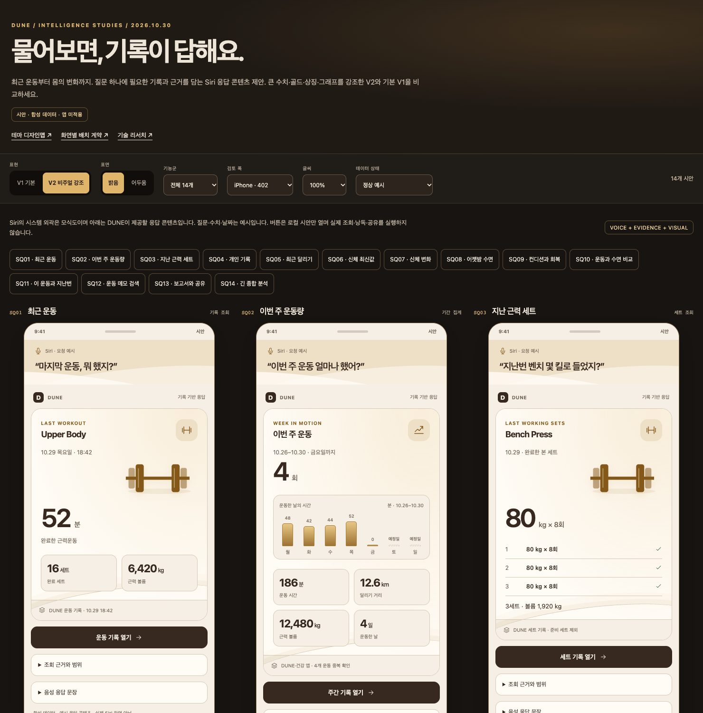

DUNE · 2026.10.30
Siri 건강 정보
디자인과 실제 캡처 상태
완료한 디자인 시안
14개 기능별 비주얼 강조안·기본안, 밝음/어두움·큰 글씨·기기 폭·데이터 상태를 비교할 수 있습니다. 아래 PNG는 합성 데이터의 디자인 제안입니다. 실제 앱 또는 시스템 Siri 캡처가 아닙니다.

남은 실제 화면
- iPhone: 수정 후 조회·기간 전환·출처와 뒤로·no-data·보고서 공유·소프트웨어 키보드·최대 글씨
- iPad: 같은 신규 화면과 상태
- Duo 접힘·펼침: 활성 패널 readback·viewport와 함께 신규 화면 확인
- 실제 Siri: 한국어 발화 라우팅·음색·억양 청취
현재 소스 기준 401cbf3d. 초기 실패 진단 PNG는 최종 캡처로 계산하지 않습니다. Watch는 별도 제안만 있으며 새 네이티브 화면이 추가되지 않았습니다.